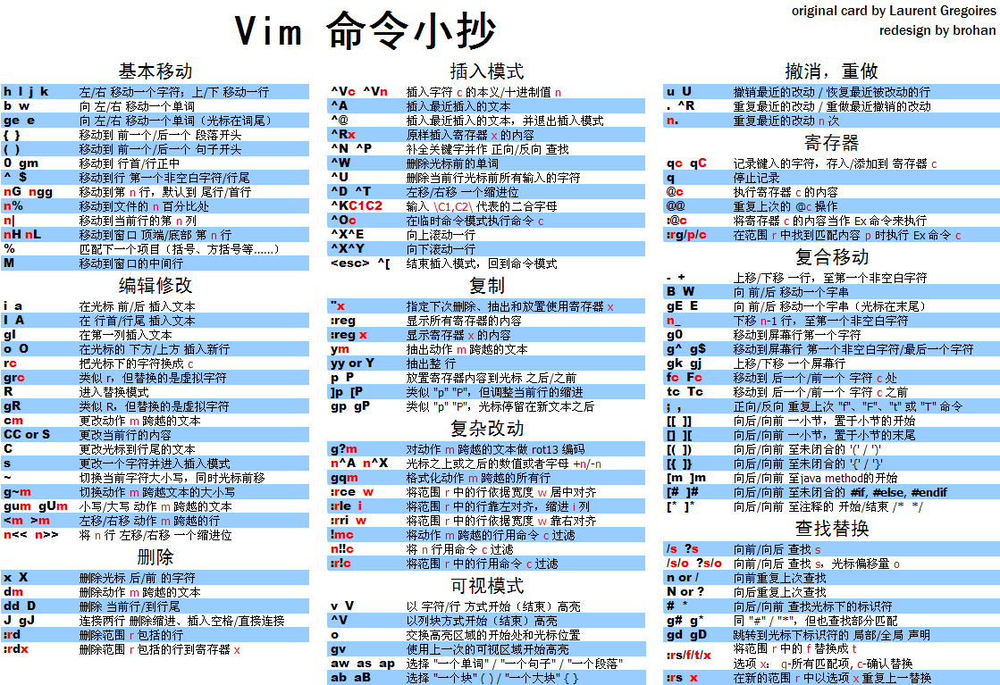

创建时间: 2015/07/16 17:39; 更新时间: 2015/06/06 15:26
vim
cheat sheet
先贴两张cheat sheet

中文

英文
宏
宏的功能非常强大, 录制的命令并不局限于普通模式, :命令也是可以的, 比如用来 批量替换文本, 比如我想删掉 md 文件中的 {#toc0.x.x}, 依次输入下面的命令就行了
vim *.md
qq
:%s/{.\+$//ge
:wnext
q
999@q当然, 针对此问题, 更好的方法是用 bufdo, 命令如下
:bufdo %s/{.\+$//g | wThe pipe allows you to use additional commands per buffer
移动光标
这里有基本的操作。
编辑 da( di( 三个键分别是删除、包括、括号，第一个命令也可以用其他的，比如说y，v, x。最后一个可以用(,{,[,t,b,B，其中b和B分别表示小括号大括号。
类似的还有dfx, 其中d是指一般的命令，f是向后查找，F是向前, 类似的t和T，但不包括要查找的词，x是任何一个字母，作用就是在当前行内删除到x字母。但这个命令只能在当前行使用，如果要跨行使用，用d/pattern
如何移动某些特定行到文尾
我用GVIM做任务管理，就是todo list。效果不错。但是不能将已完成的任务全部归档或 移动文件尾部。t
例如：
[ ] 取电影票
[X] 送费用发票
[ ] 上移动公司
我需要的是将带有[X]的行一次性全部移动到文件末尾或者归档另存为一个文件。这个组 合命令如何做？
:g/\[X\]/m$
map <F11> :g/\[X\]/m$<cr>| "归档已完成项目这里的|是表示map终结